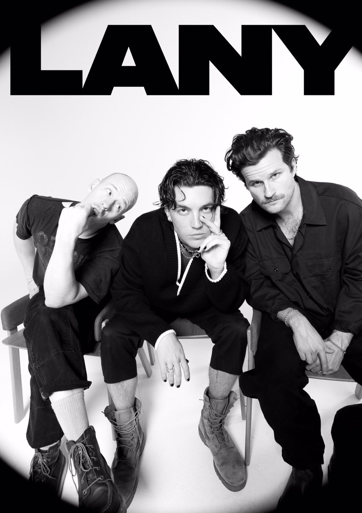
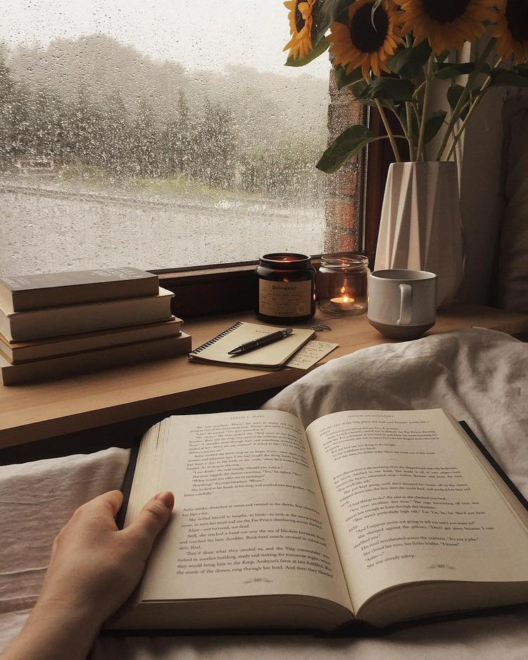
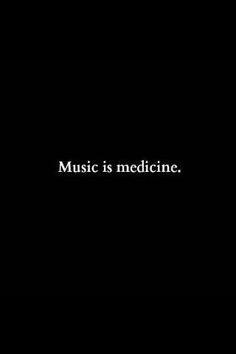
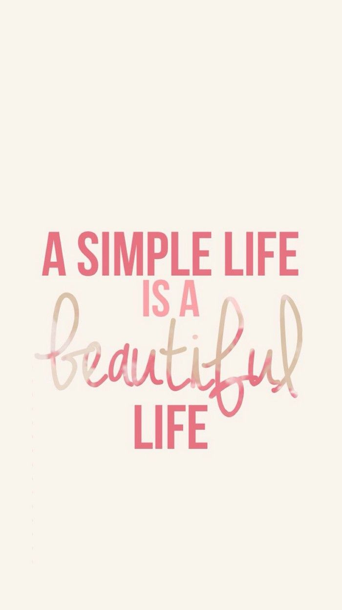
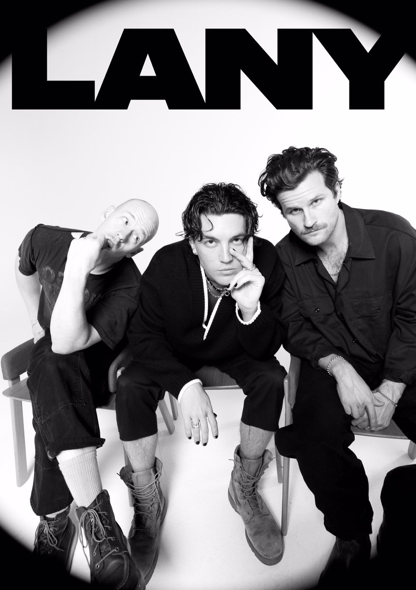
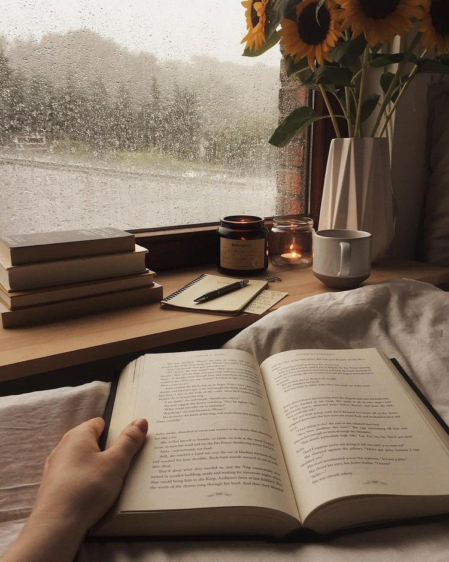
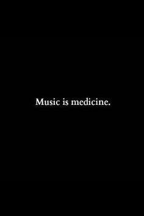
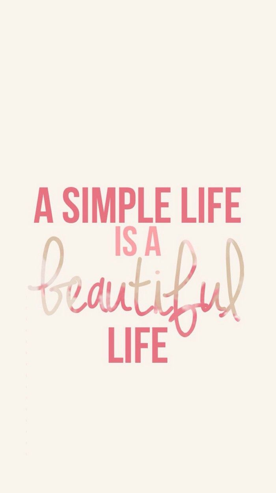

My Biodata
 







My name is Nurfarahin binti Shukran. I am 22 years old. I am born on 17 November 1998. I have two siblings and I am the oldest one. Before this, Im schooling at Sekolah Menengah Kebangsaan Tanjong Chat. Then I am pursuing my diploma in Public Administration at UITM Machang for about 2 and half year. After completing my diploma, I am pursuing my degree in Business Administration (Hons) Marketing. Now I am in semester five and next year I am going to have an internship.
My hobbies is listening and exploring the new music. I like music because music give me a pleasure and calming feelings. Not to forget, I am a big fan of LANY. LANY is a English band. I enjoy listen to all of their songs. Besides listening to music, I also like to reading. I love to reading to any materials especially novel. During school year, I bought a lot of novel but as I am growing older, I am currently like to reading something that relate to my studies. I read a lot about business and marketing. Plus I also like to read inspirational books because from those reading material, I would gain benefits.